Крупы различные и бобовые
 Крупы и бобовые — основной продукт питания и источник белка
во многих кухнях народов мира, популярны они и в России. Крупы и бобовые
недороги, в них мало жира, много питательных веществ, а при соединении
их в одном рецепте получается полностью белковая пища. Составляя меню,
помните, что крупа и бобовые — один из лучших продуктов для гарнира,
салата и закусок.
Крупы и бобовые — основной продукт питания и источник белка
во многих кухнях народов мира, популярны они и в России. Крупы и бобовые
недороги, в них мало жира, много питательных веществ, а при соединении
их в одном рецепте получается полностью белковая пища. Составляя меню,
помните, что крупа и бобовые — один из лучших продуктов для гарнира,
салата и закусок. КАК ИХ ПОКУПАТЬ И ХРАНИТЬ
Стане крупы и бобовые могут храниться не меньше года, но со временем они высыхают и становятся менее вкусными. Лучше всего покупать их в малых количествах и использовать в течение полугода. Не покупайте пакеты с пылью и плесенью. Храните крупы и бобовые в емкостях с плотно закрывающимися крышками в холодном, сухом месте. Отруби, оставшиеся в коричневом рисе и других крупах, делают эти продукты опасными, поэтому лучше хранить в холодильнике или морозильнике.
Вареную фасоль можно поставить в холодильник в емкости с плотно закрывающейся крышкой и хранить 4— 5 дней или заморозить на полгода (оттаивайте при комнатной температуре около 1 часа). Вареную крупу можно хранить в холодильнике до 5 дней. Поскольку крупы и бобовые прекрасно хранятся, можно сварить фасоль и кашу впрок, а затем использовать в салатах, супах, пловах или быстро обжаривать. Вареный рис прямо из холодильника — тяжелая пища, по его можно разогрегь в микроволновой печи.
КАК ЗАМАЧИВАТЬ ФАСОЛЬ
Замачивать фасоль в воде перед варкой целесообразно по двум причинам. Во-первых, этот процесс размягчает бобы и возвращает им влагу, что уменьшает время варки. Во-вторых, при замачивании в воде растворяются олигосахариды (сахара, которые не перевариваются в человеческом теле), вызывающие газообразование и осложняющие процесс пищеварения. Воду, в которой замачивалась фасоль, всегда выливайте и варите бобы в свежей.
Уровень воды должен быть выше замачиваемой фасоли на 5 см. (При замачивании фасоль увеличится в три раза, поэтому кладите ее в большую миску или кастрюлю.) Замачивать лучше всего на ночь или не менее 8 часов. Впрочем, утверждение "чем дольше, тем лучше" в данном случае не всегда справедливо. Если замачивать фасоль слишком долго, то она может начать бродить, поэтому всегда делайте так, как указано в рецепте или па упаковке. Если у вас мало времени, можете использовать быстрый способ замачивания. Дня этого просто прокипятите фасоль минуты 3. Снимите с огня, закройте крышкой и отставьте в сторону на 1 час. Вылейте воду, в которой фасоль замачивалась
ЗАЧЕМ МЫТЬ КРУПУ И БОБОВЫЕ
Рис, купленный в магазине, по большей части мыть перед готовкой не надо. Ом уже был вымыт, пока его обрабатывали, а повторное мытье обогащенного риса смывает крахмалистую оболочку, , которая содсржит такие питательные вещества, как витамин В1, никотиновая кислота и железо. Но дикий и импортируемый рис (например, басмати или жасмин) мыть необходимо, потому что он может быть грязным и пыльным.
Фасоль и чечевицу перед варкой надо перебрать, удаляя сморщенные бобы, камушки и веточки, а затем промыть в холодной проточной воде. Консервированные бобы тоже следует вымыть, тогда и готовое блюдо будет лучше выглядеть.
СОВЕТЫ ШЕФ-ПОВАРА
• Рис будет воздушнее, если перед тем, как вы его взобьете и подадите на стол, он постоит 5 минут.
• Варите рис в бульоне, чтобы он был вкуснее.
• Пока рис варится, крышку не поднимайте. Из кастрюли уйдут пар и тепло, и рис станет клейким.
• Продукты, содержащие кислоту (например, помидоры, уксус, вино или сок цитрусовых) или соль, добавляйте в конце варки фасоли. В противном случае ее кожа станет жесткой, и варить придется дольше.
• Для того чтобы узнать, готов ли рис или фасоль, их надо попробовать. Время готовки может быть разным в зависимости от сорта и свежести продуктов. Рис должен быть сухим и «взбитым». Фасоль может бьтъ чуть мягкой, но не пюреобразной.
• Оставляйте фасоль в жидкости, в которой варили, чтобы она нe высохла за время охлаждения
КАК ВАРИТЬ РИС
Существует два основных способа варки риса — погружение и впитывание. При варке способом погружения рис, как макароны, следует варить в большом количестве подсоленной воды до тех пор, пока он не станет мягким, а затем слить воду. Но при таком методе питательные вещества уходят в воду. Наиболее популярна варка способом впитывания, когда рис варится в определенном количестве воды, и она вся впитывается, таким образом сохраняя все питательные вещества. (Повара, готовящие рис по методу впитывания, обязательно пользуются таймером, иногда пароваркой.) Время варки и количество жидкости различны в зависимости от сорта риса (см. таблицу ниже )-При варке утиного риса поставьте на огонь двух-трехлитроную кастрюлю, налейте 450 мл воды, положите 400 г риса, насыпьте 1 ч. ложку соли (желательно) и положите 1 ст. ложку сливочного масла или маргарина (желательно). Доведите до кипения, уменьшите огонь. Закройте крышкой и варите 18—20 минут. Снимите с огня, дайте постоять под крышкой 5 минут.
КАКОЙ РИС ПОКУПАТЬ
Длинный. Тонкий, удлиненный, полированный белый рис.
Если его правильно сварить, то рисинки будут отделяться друг от друга.
Легко разваривающийся. Этот рис уже был обработан давлением и паром. Рисинки остаются твердыми и отделяются друг от друга после варки.
Мгновенно варящийся. Этот рис был уже частично или полностью сварен, а затем обезвожен. Он варится за несколько минут, но остается сухим.
Арборио. Традиционный рис для итальянского ризотто. У него толстенькие, почти круглые рисинки и высокое содержание крахмала: после варки он становится влажным и
жирным.
Коричневый. Это не шлифованный рис. У него удалена внешняя оболочка, но сохранены питательные вещества и слои волокнистых отрубей, отчего этот рис коричневатого цвета и орехового вкуса.
Басмати. Длинный рис родом из Индии. Ценится за тонкий аромат, изящный вкус и воздушную текстуру. Во время варки длинные рисинки как бы удлиняются, становятся тоньше, суше и прекрасно подходят для плова.
Дикий рис. Это не совсем рис, а семена водяной травы. Длинные темно-коричневые рисипки с ореховым, чуть грубоватым вкусом. Перед варкой его надо тщательно мыть.
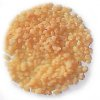
Рис мгновенного приготовления> Фото других сортов риса в энциклопедии
ЧТО ТАКОЕ КЛЕЙКИЙ РИС?
Клейкий рис — это азиатский короткий рис со слегка сладким вкусом и мягкой, клейкой текстурой из-за высокого содержания крахмала. Обычно era используют в традиционных восточных блюдах, например, в суши и десертах. Такой рис можно купить в азиатских отделах больших магазинов.
КАКУЮ КРУПУ ПОКУПАТЬ
Кускус. Зернышки предварительно сваренной манной крупы. В кулинарии Северной Африки кускус варят на пару и подают на стол с мясом и овощами, приправленными специями. Это блюдо так и называют — кускус.
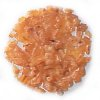
Булгур. Зерна пшеницы, отваренные на пару высушенные и раздавленные. Основной продукт питания на Среднем Востоке. Ячмень. Известное с древности зерно, из которого варят каши, пекут хлеб, делают салат и супы.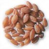
Ячмень шлифуют, чтобы снять внешнюю оболочку. Иногда ячмень заранее обрабатывают паром, поэтому он варится быстро.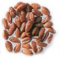
Пшеница. Не шлифованное зерно пшеницы. Из нее делают салаты, пловы, кашу на завтрак, а из пшеничной муки — выпечку.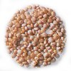
Квиноя (Кинва). Основной продукт питания древних инков — квиноя богата белками и жизненно необходимыми питательными веществами. Крошечные зерна квинои варятся мгновенно. У них слегка грубоватый вкус и упругая текстура.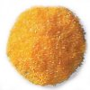
Кукурузная мука. Высушенные зерна кукурузы (желтые или белые) размалываются в муку разного помола. Ее используют в выпечке, из нее варят поленту — основное блюдо Северной Италии. В размолотой кукурузной муке сохраняется зародыш зерна, что придает ей особенный вкус Храните ее в холодильнике или морозилке.Гречиха. Зерно, не отличающееся изысканным вкусом. Готовится как рис. Гречневую кашу варят из жареных зерен гречки. Из гречневой муки пекут блины.
КАКУЮ ФАСОЛЬ ПОКУПАТЬ
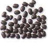
Черные бобы. Еще их называют черепашьими бобами. Это основной продукт питания в Южной и Центральной Америке, Мексике и странах Карибского региона. Они слегка сладковаты на вкус, могут составлять основу супов, смешиваться с рисом или быть начинкой для бурритос.Фасоль обыкновенная. Мелкие белые бобы. Широко используется в консервировании, идеально подходит для медленно варящихся блюд, например, рагу; потому что после варки сохраняет свою форму.
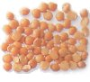
Желтый и зеленый дробленый горох. Сухой горох без оболочки, расколотый пополам. У пего слегка сладковатый вкус, который хорошо сочетается с окороком. Из него можно сделать торе, а также сварить превосходный суп.Борлотти. Это толстенькие красивые на вид бобы кремового цвета с красными черточками, которые за время варки становятся однотонными. У них горьковато-сладкий вкус.
Розовая. Эта гладкая красновато-коричневая фасоль популярна, в западных штатах Америки, где из нее готовят жареные бобы и чили. Ее можно заменить фасолью пинто.
Флажоле. У этих бледно-зеленых бобов нежный вкус. Из флажоле варят супы, делают гарниры и салаты. Во многих рецептах ею можно заменить белую фасоль.
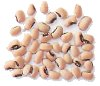
Пестрая. Овальная фасоль бежевого цвета с черным глазком. Из нее варят супы и делают салаты. Она рассыпчатая, грубоватая на вкус.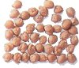
Нут. Иное название — турецкий горох. Чаще всего из нуга готовят хумус, (так на Среднем Востоке называют специальный соус). Любят его и в Италии. Время варки разных сортов нута неодинаково, поэтому в процессе готовки его обязательно надо пробовать.Красная. Из нее чаще всего варят чили кон карне. У этой фасоли среднего размера плотная кожица бордового цвета и сладкий мясной вкус.
Белая. У нее более мягкая текстура, чем у крсной фасоли, и более нежный вкус Очень популярна в итальянской кухне, где из нее варят суп и добавляют в блюда из макарон или в салат из тунца.
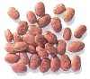
Пинто. В переводе с испанского это слово означает "раскрашенная". Эта бледно-розовая фасоль испещрена коричневато-красными штрихами. Она растет на юго-западе Испании и ценится во всех испаноязычных странах. Эту фасоль жарят, варят супы и рагу. Фасоль пинто можно заменить розовой.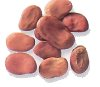
Широкая (сухая). Ее также называют "фава". Эта плоская светло-коричневая фасоль напоминает крупную масляную. У нее жесткая кожура, которую надо удалить, сбланшировав фасоль перед варкой. Обычно используется в салатах и супах в странах Среднего Востока и Средиземноморья.Масляная. Также называется "Лима". Эти большие овальные, кремового цвета бобы во время варки прекрасно сохраняют форму. "Лиму" часто подают отделыно как горячее овощное блюдо или используют в салатах.
КАКУЮ ЧЕЧЕВИЦУ ПОКУПАТЬ
Чечевица с большим содержанием белка — одна из самых древних бобовых культур. Из нее готовят бесчисленное количество вкусных блюд — индийский дал (жирное пряное блюдо с помидорами, репчатым луком и приправами), густые похлебки и салаты. Чечевицу не надо замачивать, и варится она быстрее, чем сухая фасоль.
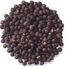
Мелкая зеленая французская чечевица. Считается, что этот сорт чечевицы самый вкусный. Крошечная круглая чечевица варится быстро, сохраняет форму, имеет ореховый вкус.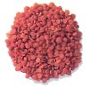
Красная. Более мелкая круглая чечевица, при варке желтеет и становится очень мягкой. Из нее часто варят индийский дал.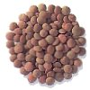
Зеленая. Популярна в европейской кулинарии. У нее плотная текстура и ореховый грубоватый вкус.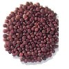
Коричневая. Чаще всего встречающийся сорт чечевицы. У нее плотная тексгура и еле ощутимый ореховый привкус.Смотрите также Источник :